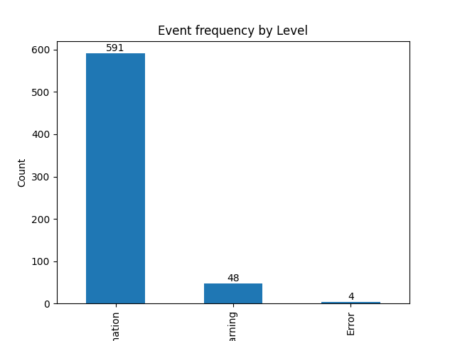
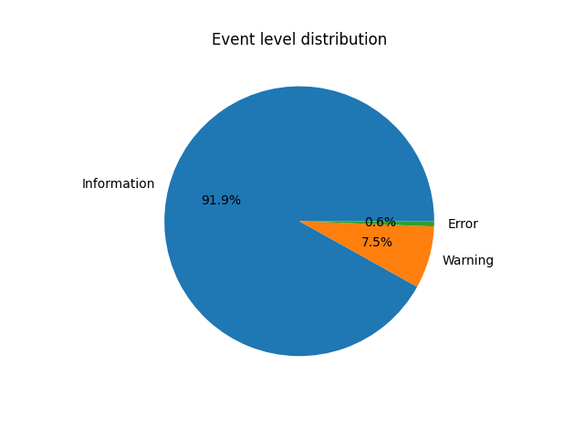
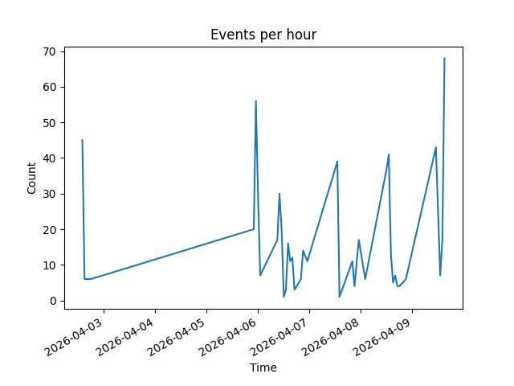
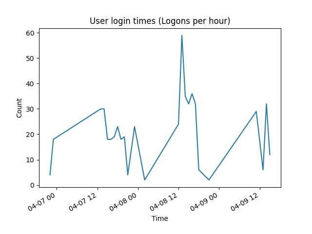
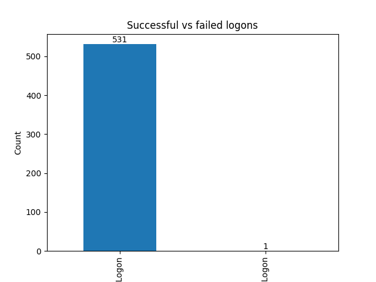

Total events: 643
Start date: 2026-04-02 14:47:17
End date: 2026-04-09 15:40:55
Event levels: Information 591 Warning 48 Error 4
Total events: 6994
Start date: 2026-04-06 22:57:58
End date: 2026-04-09 15:24:20
Event levels: Information 6994
Top Event IDs: 5379 3706 4798 2021 4624 531 4672 518 5061 91




